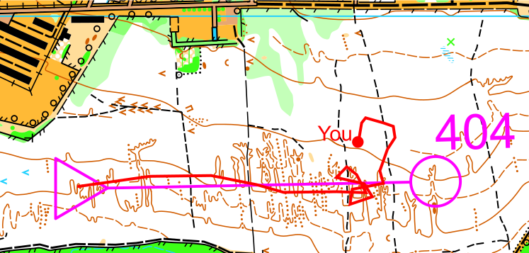

{% extends "layout.html" %}

{% block title %}
    Orienteering.rate | disq :(
{% endblock %}
{% block body %} 
		<div class="panel panel-default felso">
			<div class="panel-body">
				<h2>{{ _(" 404 Page not found") }} </h2>
				<a href="/">{{ _("Back to the frontpage") }}</a><br>
				<div style='overflow-x:auto'></div>
			</div>	
		</div>		
{% endblock %}